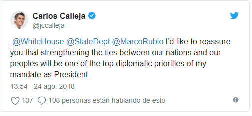
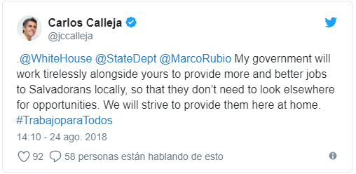
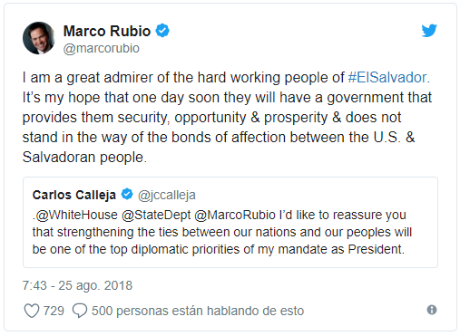

A través de su cuenta de Twitter, el candidato a la presidencia de la República por el partido ARENA, Carlos Calleja aseguró que de ganar las elecciones del 2019, fortalecería la relación entre El Salvador y Estados Unidos.
“Estados Unidos quiero reafirmarles que el fortalecimiento de la relación entre nuestras naciones y nuestros pueblos será una de las prioridades diplomáticas de mi mandato como Presidente”, afirmó Calleja.
“Mi gobierno trabajará incansablemente junto al suyo para proveer más y mejores oportunidades de trabajo a los salvadoreños en nuestro país, para que no tengan que buscarlos fuera de nuestras fronteras”, agregó.
Este llamado de Calleja, surge luego que el gobierno de los Estados Unidos anunció ayer que reevaluará sus relaciones con el gobierno de El Salvador, después que el presidente Salvador Sánchez Cerén anunciara el pasado lunes 20 de agosto el rompimiento de las relaciones diplomáticas con Taiwán y las estableciera con China Continental.
El senador de la Florida, de origen cubano, Marco Rubio respondió al llamado del candidato presidencial de ARENA, y de paso envió un mensaje para los salvadoreños.
“Soy un gran admirador de la gente trabajadora de El Salvador. Espero que algún día tengan un gobierno que les brinde seguridad, oportunidad y prosperidad, y que no se interponga en los lazos de afecto entre los estadounidenses y salvadoreños”, publicó en su cuenta de Twitter.
Rubio ha sido de los personajes más críticos al reciente establecimiento de relaciones diplomáticas entre El Salvador y China, incluso, pidió al presidente de Estados Unidos, Donald Trump, que disminuya la ayuda a El Salvador.
Los Estados Unidos han reiterado que mientras evalúa las relaciones con El Salvador, seguirán apoyando los programas ya establecidos.